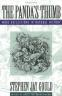

10.03.06
The Panda’s Thumb
I just finished Stephen Jay Gould’s The Panda’s Thumb, so I figured I’d write a bit about it. I’ve been a fan of SJG since reading Wonderful Life, with its theory of punctuated equilibrium and Ever Since Darwin, which introduced me to the cool concept of Neoteny. But then again, Richard Dawkins once wrote in a review, “If only Stephen Gould could think as clearly as he writes! This is a beautifully written and deeply muddled book.”
The Panda’s Thumb is a collection of essays which generally follow the same format. SJG finds some interesting tidbit of history, like Mickey Mouse or the Piltdown Man. He tells a great story with heroes, usually Charles Darwin and Thomas Huxley, and villains. Then he wraps it up with an attempt to connect to the contemporary world. I think this last step is just silly.
Gould is in his best form when he talks about the History of Science, a subject that he clearly relishes. Rather than summarizing our common perceptions of the past, Gould delves into the primary documents In The Panda’s Thumb. The results are incredibly interesting. In “Flaws in a Victorian Veil,” Wew learn why a racial theorist hold’s the views he does, in his own words. (a visceral reaction to black people when he first encountered them as an adult) In “Crazy Old Randolph Kirkpatrick,” we hear the familiar story about a scientist with a bold idea who sticks to his guns… but who’s completely wrong.
Then there’s “Dr. Down’s Syndrome,” which I found far and away the most interesting. Everyone has heard of Down’s syndrome, and it’s not too much of a stretch to guess that it was named this because it was first described by a Dr. Down. But according to Gould, almost nobody has ever gone back to read Dr. Down’s original 1866 work, and there’s good reason for this. The work “embodies an interesting tale in the history of scientific racism.” Obviously, Dr. Down didn’t name the disorder after himself. He called it “Mongolian idiocy.” I had never heard it called this before, but apparently the term was still in use 25 years ago.
The idea was that there was a hierarchy to the human races. Whites were obviously on top, followed by the “great Mongolian family.” These were also the days of recapitulation, which held that each organism, while developing, would go through the forms of its evolutionary forebears. So it seemed completely reasonable that a white European might get stuck at the Mongolian stage of his or her development and never quite make it to the top of the ladder. From this perspective, the name makes perfect sense!
The primary insight I get out a story like this is what a strange an interesting thing it is to interact directly with history, to see the prejudices and beliefs of a bygone era unfiltered. More so than any of the science, that’s the message I take out of The Panda’s Thumb.
Next on the reading list: Alexandre Koyre’s From the Closed World to the Infinite Universe. I’m going to try and get a review of the new Google Reader up as well.